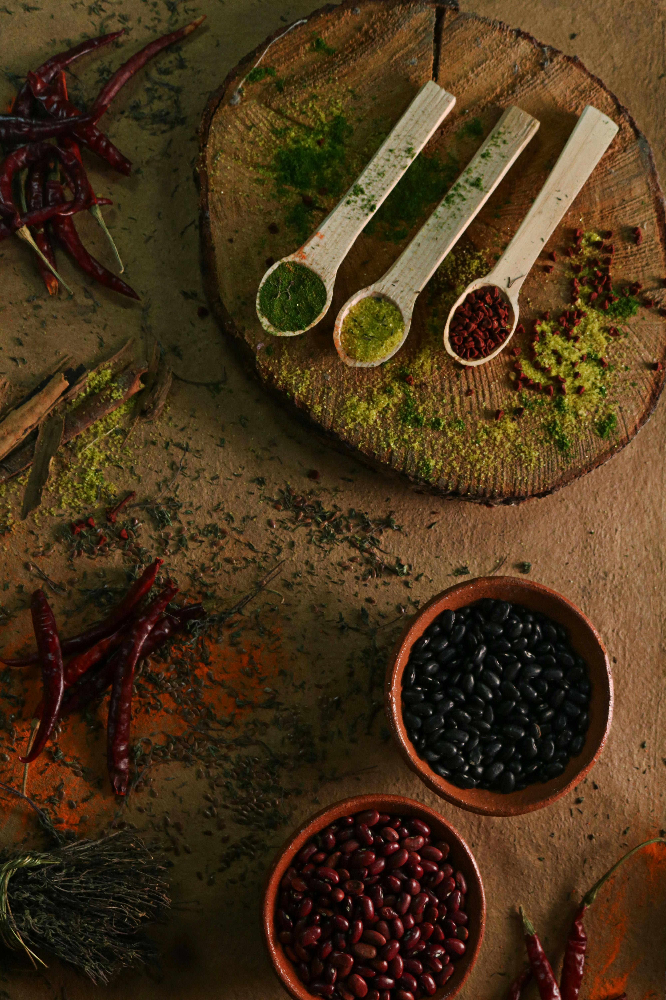
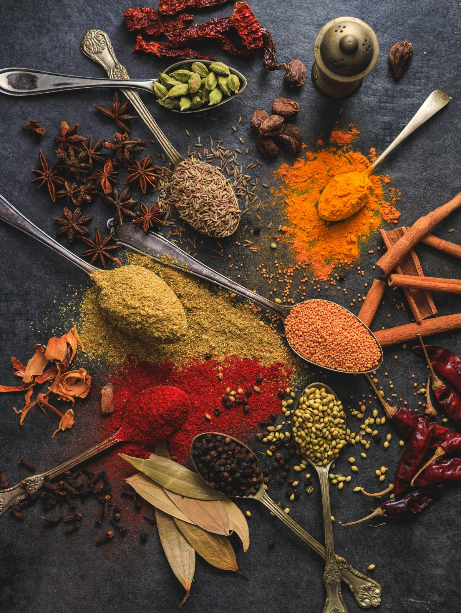

Delivering the Essence of Authentic Flavors
Baburam Masaale
Spice Up your life
Welcome to Baburam Masaale, your one-stop destination for
a diverse range of spices. Our premium selection includes chili powder,
turmeric powder, and coriander powder, guaranteed to add flavor and
richness to your culinary creations.

Our Range
Explore our range of spices that are specially curated
to enhance your cooking experience. From fiery chili powder
to earthy turmeric powder and fragrant coriander powder,
our products are designed to meet your kitchen needs.
About Us
At Baburam Masaale, we take pride in providing
high-quality spices sourced from the heart of Haridwar,
Uttarakhand. Our mission is to deliver authentic and
aromatic spices that elevate the taste of every dish,
ensuring customer satisfaction with each use.
© 2024 Copyright Baburam Masaale | All rights reserved